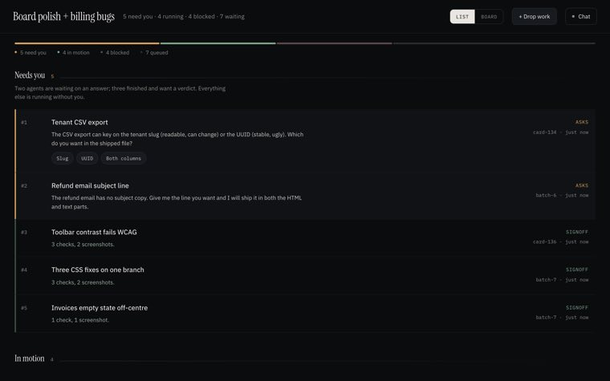
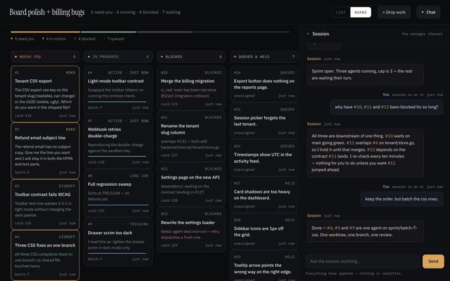
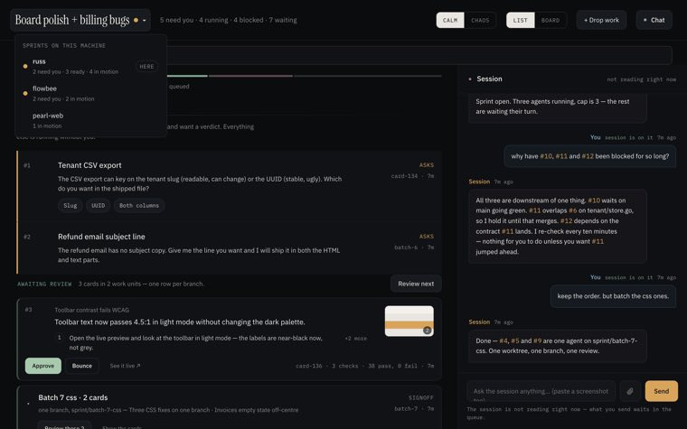
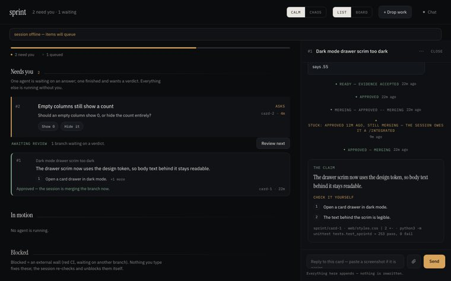
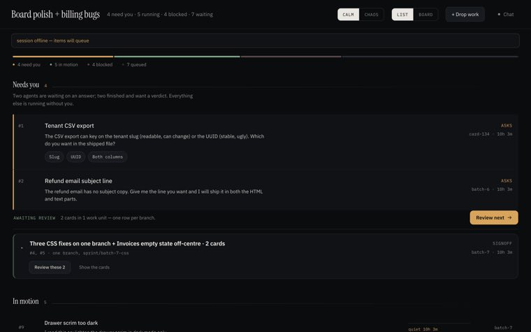
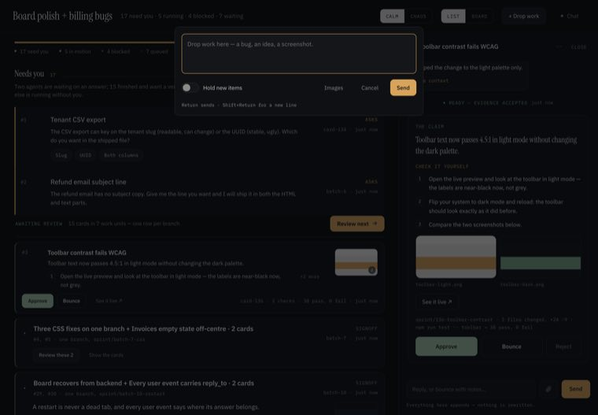

Look at it
finished work, as it looks — click any picture to fill the screen
6 cards · one branch

+2The board rebuilt on the Calm design — List by default, the 480px rail, the Fold layout, fonts vendored so nothing phones home.

A card parked where someone owes an action goes amber by itself and wakes the session.

A live phase on its own clock — “testing · 2m” — instead of the last stale thing the agent said.

An approved card leaves Needs you at once and runs as “merging” until the branch lands.
The board title becomes a menu of the other sprints on this machine, dotted where one has a question waiting.

mergingSlash opens Drop work from an empty chat box.
When a packet has no screenshot, the tile is its first check step in the same space — the grid never shows an empty grey rectangle, and a change with no picture is never quietly ranked below one that has one.
How it held up in Chaos — survives best A contact sheet is already a grid of framed objects, which is precisely what this skin turns everything into — the product's own Chaos rule is that the reading column becomes a tile grid, and C was born a tile grid. The tiles took the 2px outline and the bevel and became inventory slots; the badge became the gold plate with the sheen crawling across it; the bracket around a unit became the party frame. Nothing was resized. The only pixel type on the page is the 8px badge and the 8px section label — short, upper-case, on a plate — which is what Press Start 2P is for. The captions were already body text and the pictures were already carrying the meaning, so the skin had nothing to fight over.
What it cost: one thing. Calm dims the merging tile with opacity: .58; on purple that takes the caption under 3:1, so the merged tile keeps its full plate and is dimmed by greyscaling the picture and stepping the caption ink instead. Same signal, different mechanism.